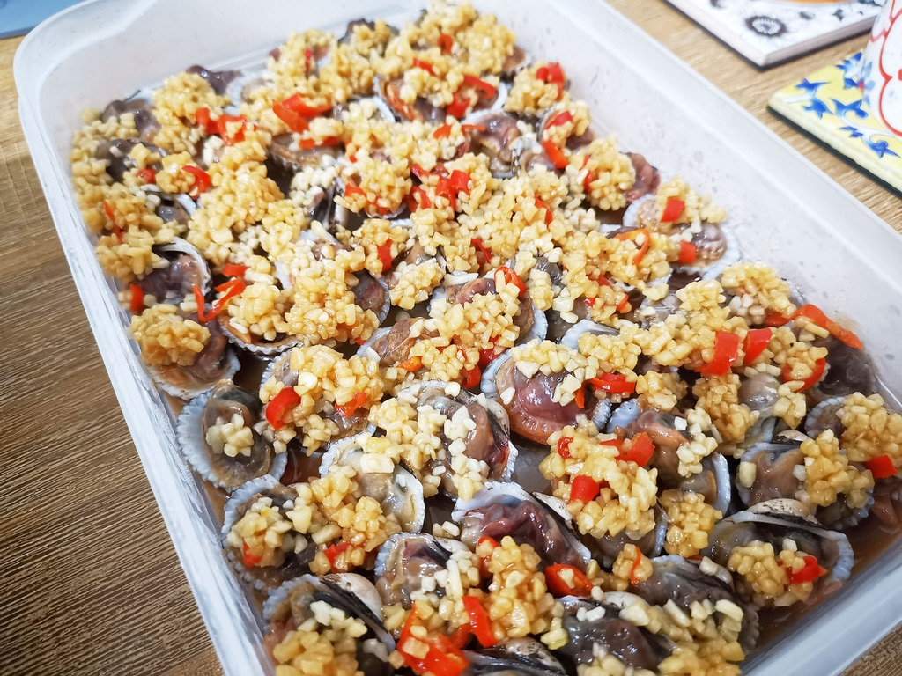

< Home
Drunken Cockles Recipe

Description
My favourite dish that originated from Putien, China. This is a recipe for drunken spicy cockles.
Ingredients
- 400g cockles
- 2 red chilli (chopped)
- 3 tbsp minced garlic
- 1.5 tbsp cooking oil
- 1.5 tbsp shaoxing wine
- 3/4 tbsp light soy sauce
- 2 pinches of sugar
- Some salt
Steps
- Scrub cockles clean.
- Soak cockles in heavily salted cold water, for 1 hour or more. This would allow the cockles to release dirt. Change water from time to time if it gets too dirty
- Prepare sauce while cockles are being soaked.
- Heat up pan and add cooking oil. Add garlic and chilli. Then off fire.
- Add shaoxing wine, light soy sauce, sugar, and salt. Stir, and set aside to cool.
- Boil cockles for 5 seconds.
- Drain cockles, and place in cold water.
- Remove half shell.
- Add sauce, and chopped red chilli.